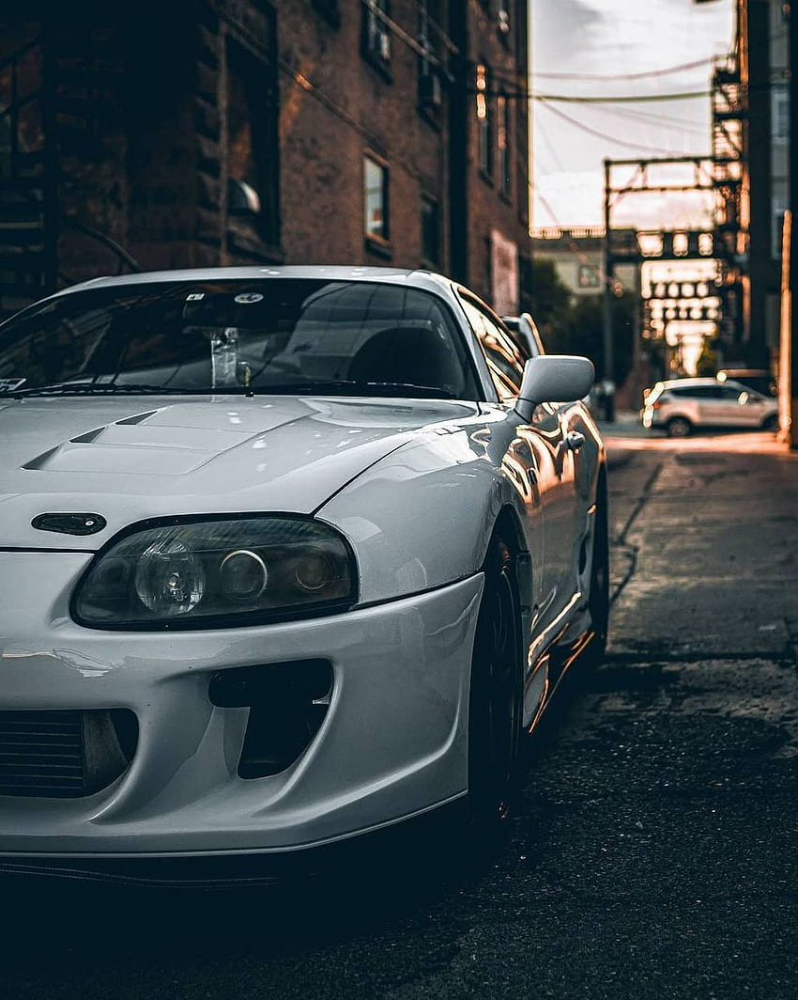
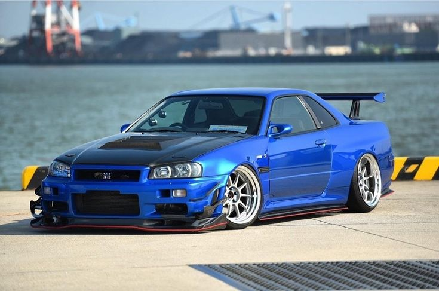

1]Toyota Supra

The Toyota Supra in my opinion is one of, if not the best, JDM cars out there. Let’s start with the engine, the 2Jz itself is a monster of a engine and also highly tunable. It’s not surprising to see some with a 1000 horsepower Supra (which is what I want to do when I’m able to get my hands Supra) also as with some of the Supra models it comes with a twin turbo 2JZ. The car even looks amazing with the A80 chassis the sleek look aged well in today’s society. The car is easier to acquire in America (I’m looking at you R34) and has gotten a lot of exposure from featuring in the Fast and The Furious movies.
Now compared to the other legend the skyline R34 GTR the 2JZ is more powerful than the rb26 but suffers with its RWD vs the AWD of the R34. Subjectively speaking (meaning my opinion)the Supra looks a little better then the R34 because it focuses on curves of the A80 chassis vs the boxy shape of the R34. Objectively both cars look beautiful and in the right hands sound beautiful. But nothing will prove which is better than a drag on a quarter mile. In my opinion the Supra is one of the best JDM cars on the market and will be remembered as one best cars from the 90’s
2]Skyline
Skylines are available in either coupé, or sedan body styles, plus station wagon, crossover, convertible and pickup/sedan delivery body styles. The later models are most commonly known by their trademark round brake and tail lights. While not distributed in the United States until its importation as the Infiniti G, the Skyline's prominence (particularly for the GT-R variant) in video games, movies and magazines resulted in many such cars being imported there, and makes up a large amount of second-hand Japanese car imports to Europe and North America. The majority of Skyline models are rear-wheel drive, with all-wheel drive being available since the eighth-generation's debut

3]Impreza
ubaru has offered a 5-door hatchback body variant since 2008. The firm also offered a coupé from 1995 until 2001, a 4-door sedan up to the fifth generation and a 5-door wagon from the Impreza's introduction - this was replaced by a hatchback with the third generation in 2008. Mainstream versions have received "boxer" flat-four engines ranging from 1.5- to 2.5-liters, with the performance-oriented Impreza WRX and WRX STI models upgraded with the addition of turbochargers. Since the third generation series, some markets have adopted the abbreviated Subaru WRX name for these high-performance variants. The first three generations of Impreza were also available with an off-road appearance package called the Outback Sport, exclusive to the North American market. For the fourth generation, this appearance package was renamed the XV (Crosstrek in North America), and is sold internationally. Colloquially, the car is sometimes referred to as Scooby.